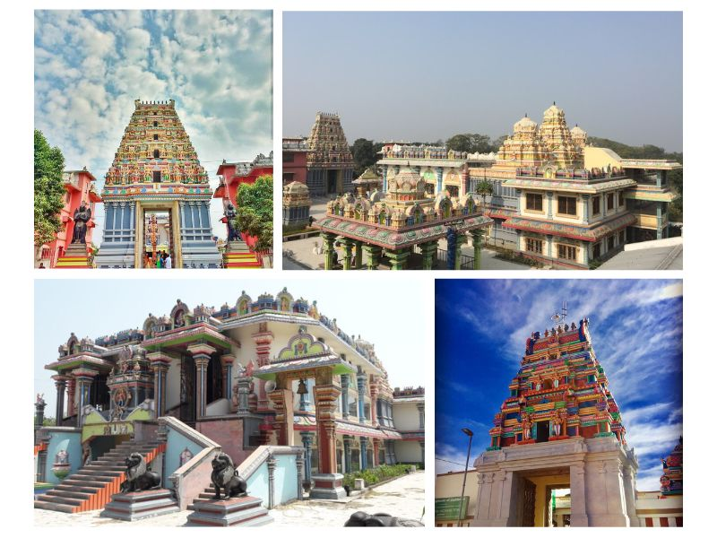

<!DOCTYPE html>
<html lang="en">
<head>
    <meta charset="UTF-8">
    <meta http-equiv="X-UA-Compatible" content="IE=edge">
    <meta name="viewport" content="width=device-width">
    <title> Ganpatganj Vishnu Temple</title>
    <script>
        function getPics() {} //just for this demo
        const imgs = document.querySelectorAll('.gallery');
        const fullPage = document.querySelector('#fullpage');
        
        imgs.forEach(img => {
          img.addEventListener('click', function() {
            fullPage.style.backgroundImage = 'url(' + img.src + ')';
            fullPage.style.display = 'block';
          });
        });

        $('img[eng]').addClass('eng').click(function(){
    var src = $(this).attr('src');
    $('<div>').css({
        background: 'RGBA(0,0,0,.5) url('+src+') no-repeat center',
        backgroundSize: 'contain',
        width:'100%', height:'100%',
        position:'fixed',
        zIndex:'10000',
        top:'0', left:'0',
        cursor: 'zoom-out'
    }).click(function(){
        $(this).remove();
    }).appendTo('body');
});
        </script>
</head>
<body>
    
</body>
</html>
<style>
    *{
        margin: 9px 9px;
    }

   /* Add a black background color to the top navigation bar */
.topnav {
  overflow: hidden;
  background-color: #e9e9e9;
}

/* Style the links inside the navigation bar */
.topnav a {
  float: right;
  display: block;
  color: black;
  text-align: center;
  padding: 14px 16px;
  text-decoration: none;
  font-size: 17px;
}

/* Change the color of links on hover */
.topnav a:hover {
  background-color: #ddd;
  color: black;
}

/* Style the "active" element to highlight the current page */
.topnav a.active {
  background-color: #2196F3;
  color: white;
}

/* Style the search box inside the navigation bar */
.topnav input[type=text] {
  float: right;
  padding: 6px;
  border: none;
  margin-top: 20px;
  margin-right: 16px;
  font-size: 17px;
}

/* When the screen is less than 600px wide, stack the links and the search field vertically instead of horizontally */
@media screen and (max-width: 600px) {
  .topnav a, .topnav input[type=text] {
    float: none;
    display: block;
    text-align: left;
    width: 100%;
    margin: 0;
    padding: 14px;
  }
  .topnav input[type=text] {
    border: 1px solid #ccc;
    
  }
}

nav {
    text-align: center;
    background-color: rgb(187, 186, 186);
    color: black;
  position: relative;
  padding-bottom: 12px;
}
nav.line {
  height: 2px;
  position: absolute;
  bottom: 0;
  margin: 10px 0 0 0;
  background: #d10d34;
}
nav ul {
    
  padding: 5px;
  margin: 5px;
  list-style: none;
  display: flex;
}
nav ul li {
  margin: 0 40px 0 0;
  opacity: 1;
  transition: all 0.4s ease;
}
nav ul li:hover {
    color: #d10d34;
  opacity: 2;
}
nav ul li.active {
  opacity: 2;
}
nav ul li:last-child {
  margin-right: 0;
}
nav ul li a {
  text-decoration: none;
  color: #000000;
  text-transform: uppercase;
  display: block;
  font-weight: 600;
  letter-spacing: 0.2em;
  font-size: 14px;
}

#fullpage {
  display: none;
  position: absolute;
  z-index: 9999;
  top: 0;
  left: 0;
  width: 100vw;
  height: 100vh;
  background-size: contain;
  background-repeat: no-repeat no-repeat;
  background-position: center center;
  background-color: black;
}


.headline{
    height: 100px;
    width: 100%;
    font-size: 25px;
}
.image{
    height: 500px;
    width: 100%;
    border: 2px white;
    border-radius: 8px;
    
}
.image ul {
    align-content: baseline;
    
}

.container{
    display: flex;
}
.data{
    overflow: auto;
    height: 400px;
    width: 800px;
    font-size: large;
    /* border: 2px solid black;
    border-radius: 8px; */
}
/* .gallary{
    height: 400px;
    width: 660px;
    border: 2px solid black;
    border-radius: 8px;
} */
.photo1{
    height: 400px;
    width: 60%;
    /* border: 2px solid black;
    border-radius: 8px; */
    float: right; 
}
/* .short{
    position: absolute;
    top: 1500px;
    height: 400px;
    width: 26%;
    border: 2px solid black;
    border-radius: 8px;

} */
.bg{
    bottom: 0px;
    height: 50px;
    width: 100%;
}

.short1{
    position: absolute;
    /* top: 1500px; */
    /* left: 420px; */
    height: 500px;
    width: 36%;
    border: 2px solid black;
    border-radius: 8px;

}
</style>
<body>
  <nav>
    <ul>
      <li class="active"><a href="\index.html">Home</a></li>
      <li><a href="">About</a></li>
      <li><a href="">Contact Us</a></li>
    </ul>
</nav>
    <div class="address">
        <br>
       <h3>Home/Pilgrimage/ Ganpatganj Vishnu Temple</h3>
    </div>
    <br>
    <div class="headline">
        <h1> Ganpatganj Vishnu Temple</h1>
    </div>
    <div class="image">
        
    </div>
    <br><br><br><br><br><br>
    <div class="container"> 
    <div class="data">
    <p>
      If South Indian architecture interested you in any way, you would never expect to relish those feelings in Bihar near you.
      <br>
      I am talking about not so famous Vishnu mandir in Gannpatganj. This is a newly built temple based on style of South Indian temples. This temple is also known as Varadraj Perumal Devsthan. The most famous attraction of this that you would like to savour  its architecture and atmosphere created by constant chants of vedic hymns performed by highly qualified Vaishnav aacharya(Teacher).
      <br><br>
      It is not as crowded as you would expect it to be after learning about it becauseof the fact that it is in remote district of Supaul in Bihar. The temple kund has many idols of devas and devis, the idol of lord vishnu being the prominent one as it is made of rare ashtdhaatu,a mixture of eight most precious metals. There lord is in his Vishnu form with holy conch Panchjanya, The Sudarshan Chakra and a mace. 
      <br><br>
      on the pedestal of the Lord Vishnu's pedestal " ऊं उत्कीर्ण सूत्रधारसितदेव: " is engraved in ancient Devanagari script used in 9th century. So if you want to sink in the feeling of utter blissfulness you must plan a weekend trip to this pilgrimage.
    </p>
    </div>
    <div class="gallary">
        
        <ul>
            <li>Distance From Bhagalpur: 139 Kms</li>
            <li>Via NH131</li>
        </ul>
        <div id="fullpage" onclick="this.style.display='none';"></div>
    </div>
        </div>
        
        <div class="photo1">
          <div class="mapouter"><div class="gmap_canvas"><iframe class="gmap_iframe" frameborder="0" scrolling="no" marginheight="0" marginwidth="0" src="https://maps.google.com/maps?width=600&amp;height=500&amp;hl=en&amp;q=Ganpatganj vishnu mandir&amp;t=h&amp;z=14&amp;ie=UTF8&amp;iwloc=B&amp;output=embed"></iframe><a href="https://capcuttemplate.org/">Capcut Template</a></div><style>.mapouter{position:relative;text-align:right;width:600px;height:500px;}.gmap_canvas {overflow:hidden;background:none!important;width:600px;height:500px;}.gmap_iframe {width:600px!important;height:500px!important;}</style></div>
        </div>

       <div class="short1">
        
       </div>
       <br><br><br><br><br><br><br><br><br><br><br><br><br><br><br><br><br><br><br><br><br><br><br><br><br><br><br>
       <br><br><br><br><br>
</body>
</html>
